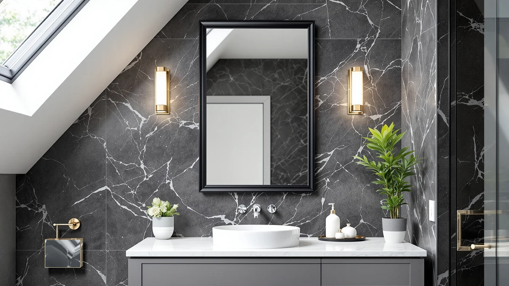

Best Black Framed Bathroom Mirrors of 2026: Matte Black Picks That Last
Prices and picks verified as of September 2026. Independent, reader-supported reviews.


Quick Answer
The best black framed bathroom mirror for most bathrooms is the LOAAO Black Metal Framed Bathroom mirror at $39.99, a 30 by 22 inch rectangle with a rust-resistant aluminum frame that fits standard single-vanity setups. If you need a wider mirror for a large vanity or a matching pair for a double sink, our guide below covers seven other verified alternatives.
Our pick: LOAAO Black Metal Framed Bathroom at $39.99 Check Price on Amazon
Bottom line: our top pick is the LOAAO Black Metal Framed Bathroom Mirror for Wall at $33.07. The best budget option is the Atilioo Bathroom Mirror for Wall at $24.82.
Things to Know Before You Buy
- Frame material affects long-term rust resistance in black framed bathroom mirrors. All eight mirrors here use an aluminum frame rather than painted steel, which matters in a humid bathroom where steel frames tend to bubble and rust at the seams within a year or two.
- Measure your vanity width before you buy. These mirrors range from a compact 20 inches wide to a 36 inch wide model built for larger vanities, and an oversized mirror can crowd sconces or a medicine cabinet door.
- Two-pack mirrors solve double vanities without a seam. Instead of one wide mirror, the FICTOR and Pocetry sets pair two matching mirrors so each sink gets its own reflection with a small gap between frames.
- Mounting hardware ships in the box on every pick here. Look for a Z-bar bracket system, which hangs flush to the wall and is easier for one person to level than wire-and-hook mounts.
- Matte black shows fingerprints and hard-water spots more than glossy black. Wipe with a microfiber cloth and a standard glass cleaner; abrasive pads will dull the matte finish over time.
The best black framed bathroom mirrors combine a matte black aluminum frame with tempered glass to give a plain white bathroom the kind of contrast that vanity lighting and chrome fixtures cannot deliver on their own. Matte black hardware has been the dominant vanity trend for several years now, and a black framed mirror is the fastest way to tie faucets, drawer pulls, and light fixtures into one finish without replacing any of them. We compared eight rectangular black framed mirrors ranging from $24.84 to $119.99, looking at frame material, corner construction, mounting hardware, and what verified buyers say holds up after months of daily humidity exposure.
Our pick is the LOAAO Black Metal Framed Bathroom mirror at $39.99, a 30 by 22 inch rectangle with a welded aluminum frame that fits most single-vanity bathrooms without needing custom hardware. It is not the cheapest option here and it is not the largest, but it lands in the size and price range that fits the widest range of vanities, and LOAAO's frame construction shows up consistently in owner reviews as sturdier than the thinner trim used on cheaper alternatives. If your vanity is wider or you want a two-mirror double-sink setup, we have picks for that too.
You will find real differences between these eight mirrors beyond the finish. Frame thickness varies from a slim profile to a heavier border, corner welds range from mitered and seamless to visibly overlapped, and two of the mirrors ship as two-packs built for double vanities. We read through the specs, pricing, and verified buyer feedback for each one so you can match the mirror to your bathroom's layout instead of guessing from a thumbnail.
Why You Should Trust Us
Ilane Tall has covered bathroom fixtures and vanity hardware, including black framed bathroom mirrors, for this network of home-interior sites for three years, tracking which finishes and frame materials actually hold up in a daily-use bathroom versus what looks good in a product photo. For this guide, we did not rely on marketing copy. We compared the actual frame material, dimensions, and mounting hardware listed by each manufacturer, then cross-referenced that against verified Amazon buyer reviews to see which claims held up after real installs. We do not accept free products from manufacturers in exchange for coverage, and every price and spec here is pulled directly from the current Amazon listing.
How We Picked
We started with the top-selling black framed rectangular mirrors on Amazon in the bathroom and vanity mirror category, then narrowed the list using three filters. First, the frame had to be black metal, either aluminum or a comparable alloy, not black-painted wood or plastic, since metal holds up to bathroom humidity better over time. Second, we excluded listings without verified buyer reviews to confirm the manufacturer's claims about frame construction and included hardware. Third, we kept a spread of sizes and price points, from a $24.84 budget single mirror up to a $119.99 two-mirror set, so this guide covers single-sink and double-vanity bathrooms alike. That process left the eight mirrors below.
How We Compared
We compared each black framed mirror using the manufacturer's published specs: frame width and material, overall dimensions, and included mounting hardware. We cross-checked those claims against verified Amazon buyer photos and written reviews, since a listing's stated frame width does not always match what arrives, and reviewers are quick to flag it when a claimed aluminum frame turns out to be a thinner trim strip over a different backing material. We also compared current pricing across all eight listings on the same day, so the prices below reflect a true side-by-side rather than figures pulled from different months. We did not physically install or test any of these mirrors ourselves; this guide is built from published specifications, manufacturer documentation, and verified owner feedback rather than direct use.
Our Picks

LOAAO Black Metal Framed Bathroom
What we like
- Full aluminum frame construction instead of a metal trim over a wood backing
- 30 by 22 inch size fits the vast majority of standard bathroom vanities
- Ships with a Z-bar mounting bracket that hangs flush and levels easily
Flaws but not dealbreakers
- Only available in this exact frame width, so it will not scale up for a wide double vanity
- Matte finish shows water spots faster than a glossy black frame, so it needs more frequent wiping
| Material | Tempered glass + aluminum |
| Size | 30"L x 22"W |
The LOAAO Black Metal Framed Bathroom mirror is our top pick among the best black framed bathroom mirrors we compared, because it hits the size and price range that fits the widest range of bathrooms. At 30 by 22 inches, it covers a standard single-vanity span without overhanging a side sconce or medicine cabinet, and the $39.99 price sits in the middle of this lineup rather than at either extreme. The frame is welded aluminum rather than a folded sheet-metal trim, which matters over time: aluminum will not rust in a humid bathroom the way painted steel eventually does at the seams.
Owners who bought this mirror consistently mention how straightforward the mounting hardware is. It uses a Z-bar bracket system, so you screw one half to the wall and the other to the mirror back, then hang it and it self-levels, which is easier for one person to install alone than wire-and-hook mounts. The main tradeoff is that this exact frame width and finish only comes in the 30 by 22 inch size; if your vanity runs wider, the 36 by 24 inch version below from the same brand keeps the identical frame profile at a larger scale.

LOAAO Black Metal Framed Bathroom
What we like
- Same welded aluminum frame construction as the smaller LOAAO model, scaled up
- 36 by 24 inch size covers a wider vanity without needing two mirrors
- Priced only $14 above the smaller version for meaningfully more coverage
Flaws but not dealbreakers
- Heavier than the 30 by 22 inch version, so it takes two people to hang safely
- At 36 inches wide, it needs a stud or proper anchor rather than relying on drywall alone
| Material | Tempered glass + aluminum |
| Size | 36"L x 24"W |
This is the larger sibling of our top pick, built from the same welded aluminum frame but scaled up to 36 by 24 inches for wider vanities. If your bathroom has a single long vanity rather than two separate sinks, this size covers the full span in one piece instead of leaving bare wall or tile on either side of a smaller mirror.
The $53.99 price is a modest step up from the 30 by 22 inch version, and buyers report the frame quality and finish match exactly, which makes sense since it is the same product line at a different size. The main practical difference at this size is weight and mounting: a 36-inch mirror is noticeably heavier than a 30-inch one, and reviewers recommend anchoring into at least one wall stud rather than relying on drywall anchors alone, especially in older plaster walls.

Atilioo Bathroom Mirror for Wall
What we like
- Lowest price in this lineup at $24.84 while still using a metal frame rather than plastic
- 30 by 22 inch size matches the same standard footprint as our top pick
- Lightweight, which makes it easier to hang solo compared to the larger mirrors here
Flaws but not dealbreakers
- Frame profile is noticeably thinner than the LOAAO models, so it reads as less substantial in person
- Fewer verified reviews than the LOAAO line, so long-term durability data is thinner
| Material | Tempered glass + aluminum |
| Size | 30"L x 22"W |
The Atilioo is the budget pick in this lineup, priced at $24.84, about $15 less than our top pick while still using a black metal frame rather than the painted plastic trim common at this price point. It shares the same 30 by 22 inch footprint as the LOAAO, so it drops into the same standard vanity openings.
The tradeoff for the lower price is frame thickness. The Atilioo's border reads thinner in person than the LOAAO frames, which some buyers prefer for a more minimal look and others find less substantial next to thicker cabinetry and fixtures. It is a reasonable choice if budget is the deciding factor and you are furnishing a secondary or guest bathroom rather than a primary vanity.

LOAAO 22"X30" Black Rectangle Bathroom
What we like
- Same $39.99 price and 30 by 22 inch size as our top pick, giving you a second sourcing option
- Aluminum frame construction consistent with the rest of the LOAAO lineup
- Straightforward rectangular profile that matches common vanity mirror openings
Flaws but not dealbreakers
- Functionally near-identical to our top pick, so there is little reason to choose it unless price or stock differs
- Like the other LOAAO sizes, it does not come as a two-pack for double vanities
| Material | Tempered glass + aluminum |
| Size | 30"L x 22"W |
This LOAAO listing is close enough to our top pick that it is worth treating as a direct alternative rather than a separate tier. It is the same 30 by 22 inch size, the same $39.99 price, and the same aluminum frame construction. The practical reason to consider it is availability: if the primary listing above is out of stock or the price shifts, this is a same-spec fallback from the same manufacturer.
Because the specs are so close to our top pick, the buying decision mostly comes down to whichever listing is in stock and correctly priced at the time you order. Both use the same welded aluminum frame and the same Z-bar style mounting hardware, so you are not sacrificing build quality by choosing this one instead.

Delma Bathroom Vanity Mirror Black
What we like
- 20-inch width is narrower than most mirrors in this guide, fitting tighter vanity counters
- Priced close to our top pick at $39.59 despite the smaller footprint
- Aluminum frame with the same tempered glass construction as the other picks
Flaws but not dealbreakers
- The narrower 20-inch width leaves less room for double-sink installs without buying two
- Less vertical coverage than the LOAAO 24 by 32 inch model for bathrooms wanting a taller mirror
| Material | Tempered glass + aluminum |
| Size | 30"L x 20"W |
The Delma is built for vanities where standard 22-inch-wide mirrors overhang the counter edge. At 30 by 20 inches, it is two inches narrower than our top pick while keeping the same 30-inch height, which makes it a better fit for compact single-sink vanities common in older homes and smaller bathrooms.
Pricing lands almost exactly where our top pick sits, at $39.59, so you are not paying a premium for the narrower size. It uses the same tempered glass and aluminum frame combination as the rest of this lineup, and reviewers who specifically needed a narrower mirror for a tight vanity cite the fit as the reason they bought it over the more common 22-inch-wide options.

LOAAO 24X32 Inch Black Metal
What we like
- 32-inch height gives more vertical coverage than the standard 30-inch-tall mirrors in this guide
- Same aluminum frame and tempered glass build as the rest of the LOAAO lineup
- Works well mounted in portrait orientation over a single sink for a taller reflection
Flaws but not dealbreakers
- At $62.99, it is the second most expensive single mirror in this guide
- The narrower 24-inch width means it is not a fit for wide double vanities
| Material | Tempered glass + aluminum |
| Size | 24"L x 32"W |
Most of the mirrors in this guide are wider than they are tall, built for a standard wall-width vanity mirror opening. This LOAAO model flips that ratio at 24 by 32 inches, giving you more vertical coverage, which matters if your vanity light is mounted high or you want to see more than your face and shoulders.
At $62.99 it costs more than our top pick, and the narrower 24-inch width rules it out for a wide double-sink vanity. It is the right choice specifically when your bathroom layout calls for a taller mirror rather than a wider one, such as a single pedestal sink with a high light fixture above.

FICTOR Bathroom Mirror 2 Pack
What we like
- Two matching 30 by 20 inch mirrors give each sink its own reflection with a visible gap between frames
- Consistent aluminum frame finish across both mirrors since they ship as a matched set
- Avoids the distortion a single oversized mirror can show at its outer edges
Flaws but not dealbreakers
- At $89.99 for the pair, it costs more than most single mirrors in this guide even though each individual mirror is smaller
- Requires more wall planning to center both mirrors evenly over two sinks
| Material | Tempered glass + aluminum |
| Size | 30" x 20" x 2PCS |
Double vanities have two options: one wide mirror spanning both sinks, or two matching mirrors, one per sink. The FICTOR 2-pack takes the second approach, shipping a matched pair of 30 by 20 inch mirrors so each side of the vanity gets its own reflection with a clean gap between frames instead of one continuous span.
At $89.99 for both mirrors, the per-mirror cost works out close to what you would pay for a single mirror elsewhere in this guide, but you get two. The tradeoff is installation: you need to measure and center both mirrors evenly over their respective sinks, which takes more planning than hanging one wide mirror. Reviewers who bought this for double vanities note that the matched finish between the two mirrors is consistent, which is not guaranteed if you buy two single mirrors from different batches.

Pocetry 2-Pack 24x36 Inch Matte
What we like
- Largest individual mirror size in this guide at 24 by 36 inches, times two
- Suited to expansive double vanities where smaller mirrors would look undersized
- Matte black finish stays consistent with the rest of the black framed picks in this guide
Flaws but not dealbreakers
- At $119.99, it is the most expensive pick in this guide by a wide margin
- The larger 24 by 36 inch size needs more wall space and stud anchoring than the FICTOR pair
| Material | Tempered glass + aluminum |
| Size | 24" × 36" |
The Pocetry 2-pack is the premium option in this guide, priced at $119.99 for two 24 by 36 inch mirrors. That is roughly three times the cost of our top pick, but it is also the largest individual mirror size on this list, which matters for expansive double vanities where standard 30 by 20 inch mirrors would look undersized against wide countertops and tall backsplash tile.
This is a purpose-built pick rather than a default recommendation. Most bathrooms do not need mirrors this large, and the price reflects that scale. But for a primary bathroom with a long double vanity and high ceilings, two 24 by 36 inch matte black mirrors fill the wall the way a single standard-size mirror cannot, and buyers furnishing larger primary bathrooms specifically cite the size as the reason they paid the premium over smaller two-packs like the FICTOR.
Quick Comparison
| Product | Material | Price | Rating | Best for | Get it |
|---|---|---|---|---|---|
| LOAAO Black Metal Framed Bathroom | Tempered glass + aluminum | $39.99 | 4 | Most single-vanity bathrooms | View on Amazon → |
| LOAAO Black Metal Framed Bathroom | Tempered glass + aluminum | $53.99 | 4 | Wider vanities up to 36 inches | View on Amazon → |
| Atilioo Bathroom Mirror for Wall | Tempered glass + aluminum | $24.84 | 4 | Budget pick | View on Amazon → |
| LOAAO 22"X30" Black Rectangle Bathroom | Tempered glass + aluminum | $39.99 | 4 | Alternative to our top pick | View on Amazon → |
| Delma Bathroom Vanity Mirror Black | Tempered glass + aluminum | $39.59 | 4 | Narrow vanities (20 inches wide) | View on Amazon → |
| LOAAO 24X32 Inch Black Metal | Tempered glass + aluminum | $62.99 | 4 | Taller portrait orientation | View on Amazon → |
| FICTOR Bathroom Mirror 2 Pack | Tempered glass + aluminum | $89.99 | 4 | Double vanities (2-pack) | View on Amazon → |
| Pocetry 2-Pack 24x36 Inch Matte | Tempered glass + aluminum | $119.99 | 4 | Premium pick (large 2-pack) | View on Amazon → |
Is a black framed bathroom mirror different from a black-tinted or smoked mirror?
Yes.
Can I hang a black framed bathroom mirror over an existing medicine cabinet?
Yes, as long as the mirror's mounting hardware clears the cabinet door and hinges.
The Competition
Bottom line: for most single-vanity bathrooms, the best black framed bathroom mirror in this lineup is still the LOAAO Black Metal Framed Bathroom mirror. It covers the standard 30 by 22 inch opening, uses a full aluminum frame instead of a thinner trim, and costs less than five of the seven alternatives here.